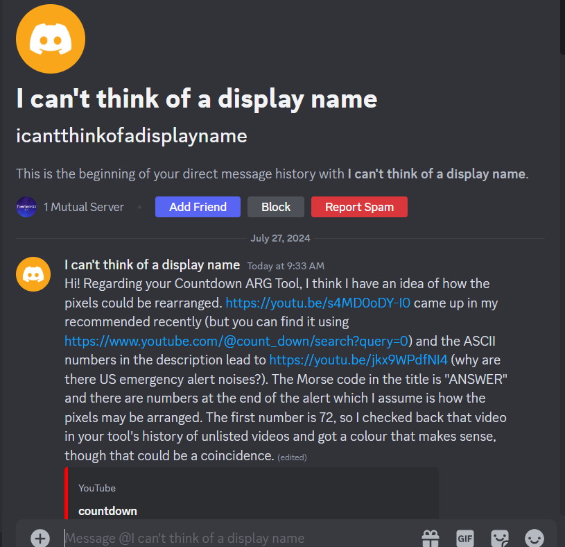

A set of tools to help solve Countdown ARG. I am back in the US, so expect this website to be updated on time. Please consider to Subscribe my YouTube, it is very appreciated!
*GitHub takes 1-3 minutes to update my website, so please check back in a few minutes if the newest number is not out yet
I never expected to get to here. Where even are we? Right. We are
at... the ANSWER!!!
The last hidden video uploaded by Countdown is "ANSWER". Thanks to the
smartness of somebody else, I was able to adjust Countdown ARG Tool's
code to show the actual intended image instead of a pixel jumble.

Apparently, I have been doing the entire ARG wrong lol...
We were supposed to wait until the last day and use Day 0's hidden
video to solve the ARG, hence the video's name being "ANSWER" in Morse
Code.
But, I brute forced a solve using what we expected the solution to be.
It was okay for the lyrics, but not very great for the actual image.
With our Discord friend's idea, I was able to edit the code of
Countdown ARG Tool to display the REAL unscrambled image.
Here is the actual incredible image we have all been working hard for.
If you're interested in the technicalities of the solution, this
section is for you.
As I breifly touched on in the previous paragraph, Day 0's "ANSWER"
video had the key to solve Countdown ARG. Check out this screen
capture of the "ANSWER" video.
Each number is between 1-100 (Arranged in a 10x10 matrix), meaning it
corresponds to the Hex Code (Pixel Color)
AND the Morse Code of that specific day. As our friend
"@icantthinkofadisplayname" on Discord put it.
The first number is 72, so I checked back that video in your tool's history of unlisted videos and got a colour that makes sense, though that could be a coincidence.
This person on YouTube also figured out the solution independently
from our friend on Discord, so props to them too.
Despite the "Decode Morse" header being mostly wrong, I will keep it
there anyways.
This is a bittersweet end to the Countdown ARG. The only real thing
keeping me sane throughout this summer was actually waking up every
day and adding a new number to this ARG Tool. At the same time, I'm
happy that this ended, so I don't have to deal with the goofiness of
Replit...
PS: click the "WHAT DAY IS IT" button at the top of the page